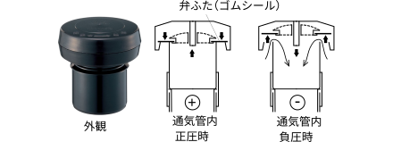

2026年
問題128 排水設備に関する語句の組合せとして，最も不適当なものは次のうちどれか．
(1)プラスタ阻集器 繊維くずの分離と収集
(2)トラップの補給水装置 封水の保持
(3)排水口空間 飲料水槽の汚染防止
(4)通気弁 負圧による空気の吸引
(5)各個通気管 自己サイホン作用の防止
2026年
問題128 正解（1） 頻出度AAA
プラスタ阻集器は，プラスタ（石こう）を収集する．
阻集器は，排水管の適切な場所に設けて，排水管を閉塞させたり，排水施設に損傷を与える有害・危険な物質あるいは，排水中に含まれる貴金属等を回収する．
各種阻集器については2026-128-1表，2026-128-1図参照．
2026-128-1表 阻集器一覧
| 種類 | 流出阻止・分離・収集の対象 | 設置場所 | 備考 |
| グリース阻集器 | 油脂分 | 厨房・調理場 | 別名グリーストラップ
トラップのない阻集器は出口側にトラップを設ける |
| オイル阻集器 | 可燃性のガソリン・油類 土砂 |
ガソリンスタンド，洗車場，車修理工場 | 別名ガソリントラップ 通気管は単独で外気に開放（開放式の場合は換気の確保） |
| 砂阻集器 | 土砂，石粉，セメント | 工場，土木建築現場 | 泥だめの深さ，排水トラップの深さ150mm以上 |
| 毛髪阻集器 | 毛髪 | 理髪店・美容室，浴場，プール | 別名ヘアートラップ |
| プラスタ阻集器 | プラスタ（石こう），貴金属 | 歯科技工室，外科ギプス室 | 別名プラスタトラップ |
| 繊維くず阻集器 | ボタン，糸くず，ぼろ布 | 営業用洗濯施設 | 別名ランドリートラップ
ストレーナーの金網は13メッシュ程度とする |
2026-128-1図 阻集器の例
-(4) 通気弁は空気の吸込みのみを行い，管内の負圧を緩和する．排気はできないので正圧の緩和できない（2026-128-2図参照）．
2026-128-2図 通気弁

左側写真 出典 SANEI株式会社
https://www.sanei.ltd/?type=item&s=%E9%80%9A%E6%B0%97%E5%BC%81
通気弁は臭気を漏らさないので屋内に設置できる．冬季開口部が凍り付いてしまうスウェーデンで開発された．可動部分があるので定期的に点検する必要があり，点検しやすい場所に設けるか，又は天井内等に設置する場合は点検口を設ける．